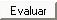
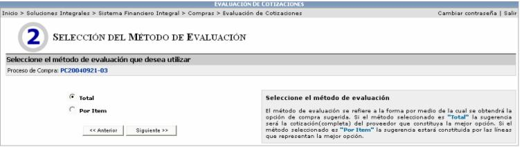
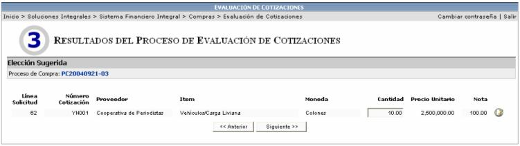
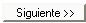
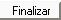

Este proceso de la aplicación es utilizado por los compradores de la empresa. El mismo permite a cada uno de estos realizar la comparación de las diferentes ofertas o cotizaciones que fueron realizadas a fin de abastecer o surtir solicitudes de materiales. Como resultado de este proceso se obtiene una o varias órdenes de compra que abastecen las necesidades de las solicitudes de materiales que se cotizaron y que se evaluaron como parte del proceso.
La lista de registros que se presentan en esta pantalla es individual para cada uno de los compradores y muestra todos los procesos de compra activos y que están pendientes de ser evaluadas a fin de asignársele a alguno de los proveedores de la empresa seleccionados e invitados al proceso de evaluación.
Para ver el detalle de cada cotización, se presiona el mouse encima de la línea deseada, lo que despliega el siguiente detalle:

Si lo que se quiere es evaluar el proceso de compra se selecciona el registro deseado y se presiona el botón

, lo cual muestra las siguientes opciones de evaluación:

Se debe de elegir el método de evaluación a aplicar, que es la forma por medio de la cual se obtendrá la mejor opción de compra sugerida por el sistema, de acuerdo a los criterios especificados en el paso # 2 Proceso de Compra, de la Publicación de la Compra.
Este paso del proceso de evaluación permite evaluar las cotizaciones brindadas por los proveedores y a la vez identifica la mejor opción de compra entre las diferentes existentes y asignadas para el proceso de compra de acuerdo a los criterios de compra establecidos.
Si se selecciona el método de evaluación Total, la sugerencia será sobre la cotización completa del proveedor que constituya la mejor opción. Mientras que si el método es Por Ítem la sugerencia será sobre cada una de las líneas que representen la mejor opción.
El sistema evaluará cada una de las cotizaciones y le sugerirá al usuario la mejor. Sin embargo el usuario decidirá si se la asigna a ese proveedor o a otro; y si se la da a otro proveedor debe de justificar el por qué cambio de proveedor.

Se puede adjudicar parcialmente a un proveedor de la siguiente manera:
Si se cambia el número de las cantidades
por cantidades menores en la columna  de una o varias de las líneas de la solicitud. Esto generará
una orden de compra por esa nueva cantidad de artículos requerida, dejando
la cantidad restante de artículos como disponibles para que posteriormente
se realice de nuevo el proceso de compra por esa cantidad.
de una o varias de las líneas de la solicitud. Esto generará
una orden de compra por esa nueva cantidad de artículos requerida, dejando
la cantidad restante de artículos como disponibles para que posteriormente
se realice de nuevo el proceso de compra por esa cantidad.
Por ejemplo si se cambia la cantidad de Vehículos de 10 a 8, se generará una orden de compra por esos 8 vehículos y los dos restantes quedan disponibles para que se realice un nuevo proceso de compra con ellos.
Al presionar este icono se
desplegará una pantalla donde se le muestra al usuario la información
de la calificación que obtuvieron los proveedores en cada cotización.
se
desplegará una pantalla donde se le muestra al usuario la información
de la calificación que obtuvieron los proveedores en cada cotización.

Una vez seleccionada la cotización se procede a llenar la orden de compra que va a generar presionando el botón


Cuando se haya llenado el formulario con la información solicitada, se presiona el botón

y se crea automáticamente la Orden de Compra, la cual se integra a la cadena de autorizaciones del sistema de compras y considera las condiciones definidas para la orden de compra previamente digitadas.
En ocasiones se pueden generar varias órdenes de compra al evaluar un proceso, ya que cuando se realiza la evaluación por línea o total se puede dar el caso de que en una solicitud de 5 líneas, 3 líneas de una cotización tengan una nota mejor que otra cotización de otro proveedor y ese otro proveedor tenga las dos líneas restantes con nota mejor a la primera cotización (esta nota dependerá de los criterios de evaluación definidos en el proceso de publicación de compra), entonces el sistema genera dos ordenes de compra: una por las 3 líneas de primera cotización y otra por las 2 líneas de la segunda cotización.